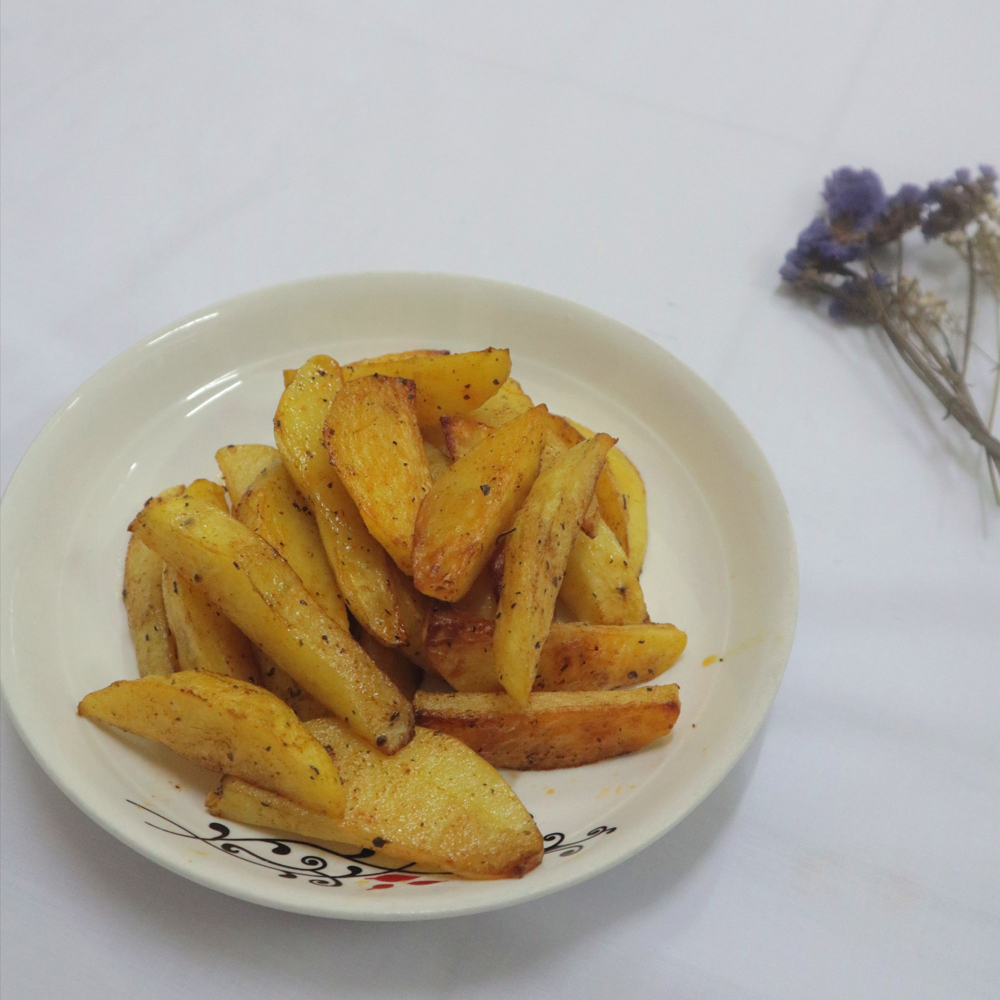
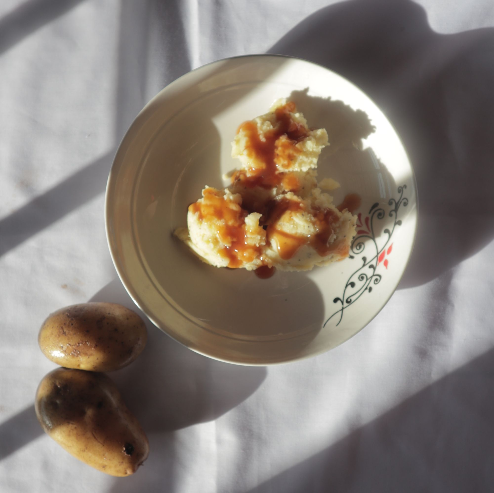

Oven-baked Potato Wedges
Scroll to bottom for printed version ⬇️ Want to eat potato wedges but feeling heavy with the fried oil? No worries, we have another simpler and mess-free option - oven baked mashed potato! Time RequiredPreparation time - 10 minutesCooking time - 15-20 minutesCooking InstructionsCut the potato into p…

Potato Pancake
Scroll to bottom for printed version ⬇️ Time RequiredPreparation time - 20 minutesCooking time - 15 minutesIngredients4 medium-sized potatoes (approx. 100g each)Adjust according to your taste preference Canola oil (2 tablespoon)PaprikaMixed herbsBlack pepper powderSaltCooking InstructionsMix the fla…
Mashed Potatoes
Scroll to bottom for printed version ⬇️ It is no doubt that KFC mashed potatoes are the best, but do you know that you can make them easily at home with simple ingredients? Let’s make delicious homemade mashed potatoes to fill up our tummies. Time RequiredPreparation time - 5 minutesCooking time
